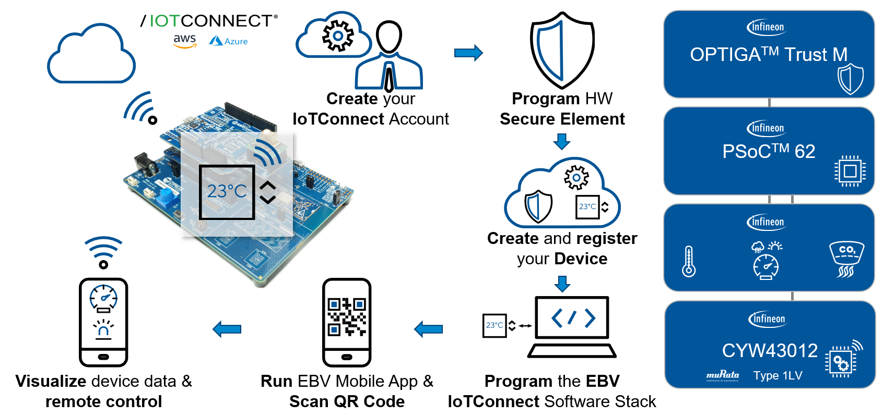

EBV-IoT - Infineon & Avnet IoTConnect Secure Cloud connected solution -
Training manual
Introduction
EBV Elektronik has designed a complete onboarding flow on top of Avnet IoTConnect cloud to simplify device onboarding and cloud platform evaluation. From building a complete cloud environment in an instant, leveraging the challenge of building state of the art secured IoT device (using EBV Elektronik hardware and software), to bringing data to end user via the EBV Mobile App. This cloud ecosystem aims at offering a fast, innovative, and scalable platform which provides real product differentiation to customers at minimal cost.
The goal of this training is to connect the demo setup to the Avnet IoTConnect cloud using one of the best-in-class hardware security thanks to Infineon OPTIGATM Trust M secure element. As main platform we will be using Infineon PSoC 62 MCU and CYW43012 based Wi-Fi/BT combo connectivity module. A set of Infineon XensivTM sensors will complete the device hardware setup to provide a more advanced product.

This training manual will guide you through a hands-on session following every step on the device secure cloud connection path. The training demonstrates how to build, develop and deploy an affordable, state of the art, end-to-end secured solution.
The following topics will be covered:
- Infineon PSoC 62 Programming & JTAG Debugging.
- Infineon OPTIGA Trust M provisioning for IoTConnect Cloud.
- Connecting the demo setup to IoTConnect Cloud.
- Remote Control from the EBV Mobile App.
- Creating custom dashboard
Deliverables
The training material is provided during the Training sessions and comes as:
- EBV-IoTC Training Zip (.zip file)
- EBV-IoTC Training no MTB Zip (.zip file without ModusToolbox)
The different resources needed to complete this training (hands-on documentation, datasheets, application notes, software & tools) are included in the delivery. However, the training manual always refer you to latest documentation provided by the manufacturers on their respective websites.
The training Zip is composed of following main folders:
- EBV Documentation: documentation and related information for EBV-IoT products
- Firmware: PSoC executable for IoTConnect demo
- Infineon documentation: documentation and related information for Infineon products
- MobileApp: source code for EBV-IoT Mobile Application
- MTB Project: ModusToolbox project used to build the IoTConnect Secured Solution
- Scripts: Python scripts for Optiga management
- Sources: source files for ModusToolbox projects to be used with the training
- Template: IoTConnect device template to upload to the cloud.
- Tools: installation files for the tools to be used during this training.
In the ‘root’ folder there are training manual and training overview in PDF .
Icon key identifiers
Icons are used to notify about valuable information or point out important steps to follow. These icons are:
| Note: Provides valuable information about a specific topic | |
| Tip: Indicates useful tips and techniques | |
| To Do: Highlights objectives to be completed and possible extensions | |
| Task accomplished: Highlights the expected results of the specific task | |
| Important: Indicates important information |
Document conventions
Table 1: Document Conventions for the manual
Convention | Usage |
|---|---|
Italic |
In document referenced link |
Italic-Bold |
Externally referenced link |
Bold |
Clickable menu item |
Bold Squared |
Clickable web page or menu item to be clicked during the tasks |
Consolas |
Commands to be executed or messages displayed in terminal |
Basic requirements
Following will be required during the training:
- A computer with Windows 10 or above, or Linux
- Android or Apple device to install mobile app (it also enables to seamlessly follow the training using online manual)
- Hardware requirements:
- The PSoC™ 62S2 Wi-Fi BT Pioneer Kit (CY8CKIT-062S2-43012)
- EBV-IoT – Infineon PAS CO2 Evaluation Shield
- EBV-IoT – Infineon OPTIGA Trust M Evaluation Shield
- 128x128 pixels OLED display (optional)
- Software requirements:
- ModusToolBox 3.1 or above
- Python (modus-shell may be used) with installed libraries
- Avnet IoTConnect cloud platform account
Notes
Please follow the steps carefully!
Note: Some of the steps marked A, B, C… have same outcome, just different way to get there. |
There is PDF version of the training manual available you can access during the hands-on using your mobile phone or tablet. It improves pace as you do not have to switch between applications. Use following QR code to access the online manual.
Note: Only hands-on relevant sections are available online. |
Not all the steps are required to follow in full. Based of your preferences, you can skip some steps and follow the tips to overtake some parts and allows you to focus more on a topic of your choice.
Tip: Tips are providing you information on steps you can eventually skip and focus more on topics of your choice. |
Links
Following please find additional links you may find useful or is being used as extra reading material:
Download Quick Start
Please use following link to download workshop content: